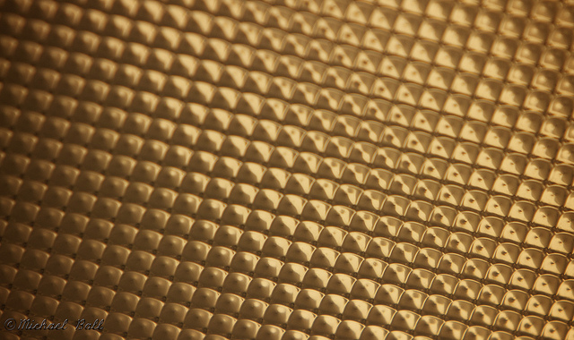

Quiet Night in Hearst on Flickr.
Via Flickr:
Here’s another shot of Hearst Memorial Mining Building at Berkeley. It’s one room where you cam easily spend hours taking photos of the interior, which is pretty much what I did a couple weeks ago. What fun, too bad projects are in full swing now.
A CALifornia Sunset on Flickr.
Via Flickr:
This was made while walking around at sunset working on some photos for a project of mine. The skyline was absolutely amazing that night, and it also happened to be during the Cal-Stanford basketball game, which we won!
GO BEARS! :)

Sunset on the Embarcadero on Flickr.
Via Flickr:
The Embarcadero in San Francisco runs along the water and while sections of it are a little, well… sketchy, it’s an amazing walk to see views of the bay. Fortunately, the Ferry Building is a great sport, because not only is it probably one of the least sketchy places in the city, but it’s filled with excellent food and gift shops!
This was a hand held 3 short HDR which went through Photomatix and Aperture.
Blue Paradise Bay on Flickr.
Via Flickr:
Paradise Bay is one of those (large) spots which always has so many interesting angles! This one was made shortly after sunset during Blue Hour.

The Ferry Building on Flickr.
Via Flickr:
A view from Embaradero Center, San Francisco.

Strom About Hearst on Flickr.
Via Flickr:
One of my newest fascinations with Berkeley is Hearst Memorial Mining Building. It’s a pretty cool building, especially for photographers! I spent about an hour or so in the entrance to the building the other day, and will go back again sometime soon. I’m also going to use it as a great place to teach some people who are interested in photography, too. :)
This was a 3 shot exposure done in photomatix which really helped bring out the dark blues in the sky lights from the storm, and some of the light from under the curves.

A Dizzying Cup on Flickr.
Via Flickr:
I love playing with long exposures and the tea cups! This one was hard to do as I wanted. I really wanted a photo from a tea cup with light blur, that would have no other motion than the circular motion of a tea cup. This one came out pretty well, though there is a slight shake evident in a couple of the lights. It was also tough to get a good balance of the lights with the tea cup spinning asynchronously from the platform, but I do like the affect it had on ‘looping’ the
green and pink lights.

Wet Day at Cal on Flickr.
Via Flickr:
It’s been raining a lot here lately, and that’s all the more reason to go out and take some photos! I really wish this courtyard had a name, but it’s a very cool place to walk through (and quite convient too).
This was a 3 shot HDR which went through Photomatix, and had the colors and contrast improved in Aperture.
Beads In the Night on Flickr.
Via Flickr:
This was made as I turned around to leave the Court of Angles at Disneyland. In some ways, it was a type of happy accident because I wanted to see how the light would turn out, but I didn’t really have time to compose mich of a shot since we were on the way out, rushing to get to somewhere..Plus, this was with my 70-200 f.2.8L and handheld which isn’t generally a very good combo at night!

Soaking up the Sun on Flickr.
Via Flickr:
As with many SoCal natives, it seems this tree has had many years to soak up all the sun it can get, seeing how it’s grown outward, even if it is the winter and all its leave are gone.
This image was a 3 shot HDR in Photomatix and B&W processed in Aperture 3.
150 Years! on Flickr.
Via Flickr:
A completely unexpected surprise during our trip to Italy this summer was the timing of their 150th year of Italian Unification. It was pretty cool to go during a week of national pride and celebration, including this fun shot. While walking around St. Mark’s Sqaure one morning we got a very cool fly over! These plans were relatively low (this was only at 70mm) and flew over us two or three times.

Sunset at Woods Cove on Flickr.
Via Flickr:
Woods Cove was an amazing little find in Laguna Beach! It’s rocky, but pretty spacious, and easy to get to. Because it’s Southern California, it’s also lovely even in winter, when this shot was made.
This was a 3 shot exposure which I merged with Photomatix and the used Aperture for some additional work. Mostly a vignette, and adding a bit of contrast, and darkening the rocks.
A Very Fine Dust on Flickr.
Via Flickr:
From a little winery in Barollo. It was a very cool tour to see everything, especially all the old stuff they’ve been keeping!

A New Mac
Well, my previous Mac had been having a few problems over time and I had multiple trips to both the Berkeley and San Francisco Apple Stores. Finally, today Apple decided to simply replace my Mac with a newer, but equivalent, model! Thunderbolt seems so cool, and I can’t wait to use it for something exciting, but so far the Intel i7 is amazingly fast.
I just want to publicly say Thanks to the guys at the San Francisco Apple store, and especially the market leader, Larry Verter who has been helping me with everything the past couple months. Apple does stand by their products and AppleCare is an excellent value and if you ever have problems, someone will help! It’s great that even though it took a little while for everything so get sorted out, it all went better than I expected in the end. :)
A Semester of Tech!
TEN of my 17 Units this semester are listed as CS classes! Another 4 are Math, and another 3 are a history class which is titled “The History of Information” and will talk about technology as it evolves, and the implications of language, to books to SMS. So, in other words, every class I have involves technology in some way which is pretty exciting! Some of my computer science classes include Python, Objective-C for the Mac and iOS, and a photography seminar! I’m looking forward to hopefully writing a bit more about what’s going on this semester, and if I’m lucky I’ll keep up with my photo a day. :)
See Ya Real Soon! on Flickr.
Via Flickr:
As Disneyland closes for the night, the Partners kindly bid us farewell from their Magic Kindom.
A Very Mad Tea Party on Flickr.
Via Flickr:
The tea cups are an excellent ride at Disneyland! Not only because they’re fun to spin as fast as posible, but they also make excellent photos at night when playing with long exposure.
This was made standing outside the attraction in one of the viewing areas, and was a 3 exposure shot which I merged in Photomatix (though clearly it isn’t an HDR photo by definition).
A Grand Cave on Flickr.
Via Flickr:
It’s interesting how in Italy quite a few wineries want to produce wines “the new way” with more control and technology like is done with modern wineries in California. Argenteria winery fairly recently renovated much place and built an amazing new cave for all their barrels to age in.
If there were a way to have smell-o-vision, this photo needs it! :)

The Hollywood Tower Doesn’t Feel so Tall on Flickr.
Via Flickr:
I’m always amazed by Bugs Land when I actually spend the time to stop and look at the detail. It’s pretty amazing how well the imagineers were able to completey change the scale of life. I think this shot helps capture that because not only do things already seem out of proportion, but with the hotel in the background, it really appears much smaller than it actually is.

Detail at the top on Flickr.
Via Flickr:
A more detailed view of the campinile from the top
Colorful Catalina on Flickr.
Via Flickr:
An early morning view of California from a great little island. I believe it’s facing Long Beach, but I can’t be sure since this shot was taken many years ago while at CIMI in 8th grade. It was the idea of a few of us photographers (one of whom is a teacher) for a sunrise hike. :)

The Campanile on Flickr.
Via Flickr:
…It’s taller than Hoover Tower. :)

Big Thunder Mountain RR on Flickr.
Via Flickr:
This here’s the wildest ride in the Wilderness!
Screamin at the Top on Flickr.
Via Flickr:
Whether you’re scared out of your mind, or having the time of your life, California Screamin was very aptly named!
This was made from Micky’s Fun Wheel, and I’m glad I brought my 70-200! It’s a shot that I’ve wanted to try for a while, and I’m glad they let me bring the lens in the park as white Canon zooms tend to get questioned…
P.S. Does anyone else think it’d be totally cool to have a camera mounted at the end of the blue overhang and get a bust of the train coming straight at you? (Especially if you could do it at the launch site…) Though I doubt there’s any way they’d ever let a camera be mounted there in a million years!

Florence Pano on Flickr.
Via Flickr:
Taken from the top of the Duomo (Cathedral) in Florence. I walked all the around the top and took around 40 shots, but there’s a bit less resolution because I overlapped quite a bit…
If you get a chance please try and view the large version on Flickr and zoom in. It looks neat to see everything in detail from a bird’s eye view!

Which way? on Flickr.
Via Flickr:
Take your pick of which way you’d like to go!
This was during setup of one of our high school rallies. They’re quite a large production and these arrows (which represent one color for each class) were part of a 5 or so foot sign. I loved the colors of all of them laying there, especially against the bright red mats which lined the gym floor.

Indecison… on Flickr.
Via Flickr:
A couple days ago coasterluver and I decided to head out to Laguna Beach and try some long exposures.
This shot was done as a 3 exposure HDR in Photomatix and a bit of work in Aperture. I love both the B&W and the color version of this image, and while I was playing around with both this crazy idea got stuck in my head and now you see the result. I’m not sure it’s my absoute favorite version, but the juxtoposition of colors is keeping eyes and mind on this shot! :)

The Light on Flickr.
Via Flickr:
I was bored one day and looking for interesting things in my dorm… this is the ceiling light and is at the minimum focus distance for the 70-200 which made some really interesting DoF
It’s my attempt at something a little more abstract.

Mickey’s Fun Wheel at Paradise Pier on Flickr.
Via Flickr:
Disney’s California Adventure